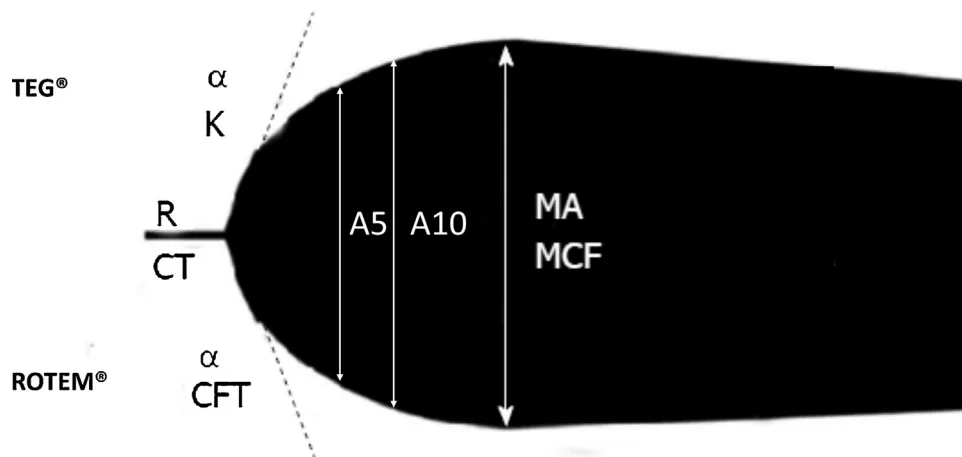

Guidelines
Guidelines
Stéphanie Rouleta,*, Emmanuel de Maistreb, Brigitte Ickxc, Normand Blaisd, Sophie Susene, David Faraonif, Delphine Garrigueg, Fanny Bonhommeh, Anne Godieri, Dominique Lasnej, and GIHP
aInserm U 12-11, service anesthésie-réanimation 1, université de Bordeaux, CHU de Bordeaux, 33000 Bordeaux, France
bUnité d'hémostase, centre hospitalier universitaire, 21079 Dijon, France
cUniversité Libre de Bruxelles, Erasme University Hospital, Department of Anesthesiology, Brussels, Belgium
dHématologie et oncologie médicale, CHUM, Montréal, Canada
eInstitut d'hématologie et transfusion, CHRU de Lille, 59037 Lille, France
fDepartment of Anaesthesia and Pain Medicine, The Hospital for Sick Children, University of Toronto, Toronto, Canada
gPôle d'anesthésie-réanimation, CHRU de Lille, 59037 Lille, France
hService d'anesthésiologie, hôpital universitaire de Genève, Geneva, Switzerland
iService d'anesthésie-réanimation, Fondation Rothschild, 75019 Paris, France
jLaboratoire d'hématologie, hôpital Necker, 75015 Paris, France
ARTICLE INFOArticle history:Available online
3 February 2018
Viscoelastic tests
Thromboelastography
Thromboelastometry
Severe trauma
Cardiac surgery
Liver transplantation
Purpose: Viscoelastic tests (VETs), thromboelastography (TEG®) and thromboelastometry (ROTEM®) are global tests of coagulation performed on whole blood. They evaluate the mechanical strength of a clot as it builds and develops after coagulation itself. The time required to obtain haemostasis results remains a major problem for clinicians dealing with bleeding, although some teams have developed a rapid laboratory response strategy. Indeed, the value of rapid point-of-care diagnostic devices such as VETs has increased over the years. However, VETs are not standardised and there are few recommendations from the learned societies regarding their use. In 2014, the recommendations of the International Society of Thrombosis and Haemostasis (ISTH) only concerned haemophilia. The French Working Group on Perioperative haemostasis (GIHP) therefore proposes to summarise knowledge on the clinical use of these techniques in the setting of emergency and perioperative medicine.
Methods: A review of the literature.
Principal findings: The role of the VETs seems established in the management of severe trauma and in cardiac surgery, both adult and paediatric. In other situations, their role remains to be defined: hepatic transplantation, postpartum haemorrhage, and non-cardiac surgery. They must be part of the global management of haemostasis based on algorithms defined in each centre and for each population of patients. Their position at the bedside or in the laboratory is a matter of discussion between clinicians and biologists.
Conclusion: VETs must be included in algorithms. In consultation with the biology laboratory, these devices should be situated according to the way each centre functions.
© 2018 The Authors. Published by Elsevier Masson SAS on behalf of Société française d'anesthésie et de réanimation (Sfar). This is an open access article under the CC BY license (http://creativecommons.org/licenses/by/4.0/).
* Corresponding author. Inserm U 12-11, laboratoire maladies rares : génétique et métabolisme (MRGM), service d'anesthésie-réanimation uro-vasculaire et transplantation rénale, service d'anesthésie-réanimation I, hôpital Pellegrin, université de Bordeaux, centre hospitalier universitaire de Bordeaux, place Amélie-Raba-Léon, 33076 Bordeaux cedex, France.
E-mail address: stephanie.roulet@chu-bordeaux.fr (S. Roulet).
P. Albaladejo (Anaesthesia-resuscitation, Grenoble, France), S. Belisle (Anaesthesia, Montreal, Canada), N. Blais (Haematology-Haemostasis, Montreal, Canada), F. Bonhomme (Anaesthesia-resuscitation, Geneva, Switzerland), A. Borel-Derlon (Haematology-haemostasis, Caen, France), J.Y. Borg (Haemostasis, Rouen, France), J.-L. Bosson (Vascular Medicine, Grenoble, France), A. Cohen (Cardiology, Paris, France), D. Faraoni (Anaesthesia-resuscitation, Toronto, Canada), P. Fontana (Haemostasis, Geneva, Switzerland), D. Garrigue-Huet (Anaesthesia-resuscitation, Lille, France), A. Godier (Anaesthesia-resuscitation, Paris, France), Y. Gruel (Haemostasis, Tours, France), J. Guay (Anaesthesia, Montréal, Canada), J.F. Hardy (Anaesthesia, Montréal, Canada), Y. Huet (Cardiology, Paris), B. Ickx (Anaesthesia-resuscitation, Brussels, Belgium), S. Laporte (Pharmacology, Saint-Etienne), D. Lasne (Haematology, Paris), J.H. Levy (Anaesthesia-resuscitation, Durham, USA), J. Llau (Anaesthesia, Valencia, Spain), G. Le Gal (Vascular Medicine, Ottawa, Canada), T. Lecompte (Haematology, Geneva, Switzerland), S. Lessire (Anaesthesia, Namur, Belgium), D. Longrois (Anaesthesia-resuscitation, Paris, France), S. Madi-Jebara (Anaesthesia, Beirut, Lebanon), E. Marret (Anaesthesia-resuscitation, Paris, France), J.L. Mas (Neurology, Paris, France), M. Mazighi (Neurology, Paris, France), P. Mismetti (Clinical Pharmacology, Saint-Etienne, France), P.E. Morange (Haematology, Marseille, France), S. Motte (Vascular Pathology, Brussels, Belgium), F. Mullier (Haematology, Namur, Belgium), N. Nathan (Anaesthesia-resuscitation, Limoges, France), P. Nguyen (Haematology, Reims, France), Y. Ozier (Anaesthesia-resuscitation, Brest, France), G. Pernod (Vascular Medicine, Grenoble, France), N. Nathan (Anaesthesia-resuscitation, Limoges, France), N. Rosencher (Anaesthesia-resuscitation, Paris, France), S. Roulet (Anaesthesia-resuscitation, Bordeaux, France), P.M. Roy (Emergency Medicine, Angers, France), C.M. Samama (Anaesthesia-resuscitation, Paris, France), S. Schlumberger (Anaesthesia-resuscitation, Suresnes, France), J.F. Schved (Haematology, Montpellier, France), S. Van Belle (Cardiology, Lille, France), P. Van der Linden (Anaesthesia-resuscitation, Brussels, Belgium), A. Vincentelli (Cardiac surgery, Lille, France), and P. Zufferey (Anaesthesia-resuscitation, Saint-Etienne, France).
Viscoelastic tests (VETs), thromboelastography (TEG®) and thromboelastometry (ROTEM®) are global tests of coagulation performed on whole blood, unlike the standard tests such as Quick Time (QT), activated Partial Thromboplastin Time (aPTT) and the fibrinogen test performed on platelet poor plasma (PPP) [1]. They evaluate the mechanical strength of a clot as it builds and develops after coagulation itself. The time required to obtain haemostasis results remains a major problem for clinicians dealing with bleeding, although some teams have developed a rapid laboratory response strategy [2]. Indeed, the value of rapid point-of-care diagnostic devices such as TEG® and ROTEM® has increased over the years.
However, VETs are not standardised and there are few recommendations from the learned societies regarding their use. In 2014, the recommendations of the International Society of Thrombosis and Haemostasis (ISTH) only concerned haemophilia [3]. The French Working Group on Perioperative Haemostasis (GIHP) therefore proposes to synthesise knowledge on the clinical use of these techniques in the setting of emergency and perioperative medicine. The literature search: After a reminder of how VETs work, we attempt to answer various questions according to the clinical situation: can they be used to identify
abnormal haemostasis? To monitor fibrinolysis? To guide the treatment of coagulopathy? To improve the prognosis of patients? Are their results obtained more rapidly than those of routine laboratory tests? Where should they be placed: at the bedside or in the laboratory?
VETs analyse the elastic and viscous properties of whole blood taken from citrated tubes during the various phases of coagulation, which are also influenced by the fibrinolytic system. Unlike conventional coagulation tests that study clotting factors in PPP with the addition of procoagulant phospholipids, VET investigate the coagulation potential of whole blood by incorporating certain properties of platelets, leukocytes and erythrocytes. Their main characteristic is their sensitivity to the mechanical properties of the clot.
A VET is composed of a bowl containing the whole blood to be analysed. In TEG®, the bowl oscillates 4.75° around a plunger connected to a torsion wire. It is important for the robustness of the device and to avoid artefacts that rotational thromboelastometry (ROTEM®) does not use a torsion wire anymore and stabilises the pin axis with a ball bearing. While uncoagulated blood remains fluid and does not transmit any displacement to the plunger and thus to the torsion wire, coagulated blood causes a circular movement of the wire whose amplitude is recorded on a plot. A typical thromboelastography pattern is composed of four important parameters (Fig. 1). The first component (R, reaction time in minutes in TEG® or CT, clotting time in seconds in ROTEM®) represents the initial phase of coagulation activation before a change in the physical properties of the blood occurs, i.e. a clot. The second component (K, kinetic time in minutes in TEG® or CFT, clot formation time in seconds in ROTEM®) estimates the clotting time required for an amplitude of 20 mm to be obtained. The angle alpha is derived from the tangent of the curve and represents the kinetics of clot formation. Finally, the maximum amplitude (MA in mm in TEG® or the maximum clot firmness, MCF in mm in ROTEM®) expresses the maximum deflection point of the curve and represents the maximum clot strength. The amplitude of the clot strength at 5 and 10 min is termed A5 and A10 in ROTEM®. Other parameters of interest are maximum lysis (ML), which is the maximum lysis of the clot in percentage of MCF during run time. In ROTEM®, lysis index (LI) at 30 and 60 min are defined as the residual clot in percentage of MCF 30 and 60 minutes after the clotting time. In TEG® lysis (LY) 30 and 60 are defined as the reduction in clot firmness in percentage of MA 30 and 60 minutes after MA [4].
Initially, this technology was used mainly by physiologists, owing to its complexity and poor reproducibility. Technological advances have led to the development of automated models distributed in France by Haemonetics and Werfen: the TEG® and the ROTEM®, which are adaptations of the original thromboelastography. The analytical performance and ease of use of these devices must therefore be evaluated separately.
VETs are performed on whole blood taken from citrated tubes. Thus, blood must be recalcified. This step has always been done automatically on ROTEM® but was manual on the TEG® (pipetting of 20 µl of concentrated calcium). On the new version of the TEG®, this step is now automatic. This calcium addition is supra physiologic, as for standard laboratory tests.
The analysis is carried out while a bowl containing the whole blood oscillates 4.75° every 5 seconds. A suspended metal rod connects the cuvette to a transducer detecting the movement of

Fig. 1. Normal plot obtained with a viscoelastic device and its parameters. TEG®: R: reaction time; K: kinetic time; : clot formation kinetic; MA: maximal amplitude. ROTEM®: CT: clotting time; CFT: clot formation time; : clot formation kinetic; A5: clot amplitude at 5 min; A10: clot amplitude at 10 min; MCF: maximum clot firmness.
the rod, which starts to oscillate as soon as the viscoelastic force of the clot increases. The device is distributed with reagents allowing various analyses to be performed:
TEG FF and r-TEG are heparin sensitive.
In its earlier versions, the TEG® had a critical pipetting step whereby a volume of whole blood was deposited in the container with the reagent. The new version (6s), which is more automated, uses a system of cartridges, with minimal handling and reading of clot formation not anymore by a viscoelastic but by a resonance method. The blood sample is exposed to a fixed frequency vibration. A LED detector measures the vertical movements of the blood clot. The strongest clots have the highest resonance frequencies, resulting in a more classical pattern of greater amplitude [5].
The ROTEM® bowl remains static. The pin immersed in the bowl containing the citrated whole blood performs an oscillation movement of 4.75° every 6 seconds. The viscoelastic force of the clot interferes with the circular movement of the axis, which is detected by an optical reader that captures its movement. The optical drive data is transformed into a graph. ROTEM® is also sold with reagents evaluating parameters similar to those available with TEG®.
It is to note that EXTEM, FIBTEM and APTEM contain a heparin inhibitor, which neutralises up to 5 IU/mL of heparin.
In a study of 52 patients with extracorporeal circulation (ECC), Ortmann et al. compared TEG® and ROTEM® [6]. The study demonstrated a systematic difference between the values of MA TEG FF and MCF FIBTEM attributed to the various platelet function inhibitors used by these two techniques or to differences in the activators used (tissue factor, phospholipids) [7,8]. The two techniques gave different results and were shown not to be interchangeable [9]. It should be noted that VETs are usually performed at 37 °C and should be interpreted with caution in hypothermic patients. In ROTEM® delta, measurement temperature can be adapted to patient temperature within the range of 30 to 40 °C.
It is difficult to compare the values obtained with VETs and those obtained by the routine coagulation tests. While several authors have correlated VET parameters with the numerical values of platelets and fibrinogen [10–16], few have observed a significant correlation with QT and aPTT. This is due to several factors related to the VET analysis of whole blood such as the influence of red blood cells, leukocytes and platelets on haemostasis. The correlation between VETs parameters and QT/INR depends on the
activator used and the clinical setting. Whereas EXTEM CT correlates well with INR in patients treated with vitamin K antagonists [17,18], INTEM CT, kaolin TEG R and r-TEG R do not [17,19]. Agren et al. evaluated the approximate value of fibrinogen obtained by TEG FF in 63 surgical patients and 38 healthy volunteers [20]. Fibrinogen concentrations obtained by TEG FF were on average 1.0 g/L higher than those obtained by the Clauss test.
The correlation between fibrinogen concentration and VET parameters is influenced by various parameters: heparinaemia [6], type of vascular filling solutes [21], haematocrit [10], factor XIII concentration [22], administration of fibrinogen concentrates [23].
Lang et al. observed a coefficient of variation (CV) ranging from 2 to 14% for ROTEM® parameters [24]. The quality assurance study by Kitchen et al. carried out in 2010 in 18 centres for TEG® and 10 centres for ROTEM® found CVs ranging from 7 to 83% [25]. VETs lack reagents that meet the standards of international standardization and allow evaluation with the development of quality control exchange programs. The factors involved in the variability of the results are the following: type of device; reagents; pre-analytical parameters such as type of sampling, time elapsed before start of analysis, site of analysis and clinical context. The thresholds found in monocentric studies have rarely undergone independent prospective evaluation, limiting the generalization of their results.
TEG® and ROTEM® are global coagulation tests that evaluate clot formation and its mechanical properties and, to a certain extent, its stability (influence of the fibrinolytic system) in whole blood. The different reagents available make it possible to study various aspects of haemostasis. Nevertheless, the values of the parameters are not perfectly correlated with the routine coagulation tests and TEG® and ROTEM® are not interchangeable. An algorithm built from TEG® cannot be used with ROTEM® and vice-versa.
Haemorrhage is the leading cause of mortality in patients hospitalised for trauma. It is complicated in 25 to 30% of cases by acute traumatic coagulopathy (ATC), which worsens the bleeding and increases mortality four-fold. Several clinical studies have shown that VETs can predict recourse to transfusion of red blood cell concentrates (RBCs), mass transfusion and mortality [26]. FIBTEM MCF < 7 mm is predictive of RBC transfusion [27]. In 300 trauma patients, EXTEM A5 > 35 mm had a negative predictive value of 83% for RBC transfusion [28]. r-TEG ACT < 105 seconds was a risk factor independent of the absence of transfusion within the first 6 hours after admission (OR: 1.85, 95% CI: 1.07–3.18) [29]. The prospective analysis of 300 trauma patients showed that the 35 mm threshold for EXTEM A5 made it possible to predict massive transfusion (AUC: 0.80, 95% CI: 0.63–0.97). An analysis of 808 trauma patients found a predictive value of massive transfusion for FIBTEM A5 ≤ 9 mm and EXTEM A5 ≤ 40 mm with a sensitivity of 77.5% and 72.2% respectively [30]. r-TEG ACT > 128 seconds was an independent risk factor for massive transfusion in the first 6 hours (OR: 5.15; 95% CI: 1.36–19.49) [29]. In a severe trauma study in 1974 patients, Holcomb et al. found a better prediction of massive transfusion by the r-TEG angle than by the routine tests () [31]. In a retrospective study in 190 patients, r-TEG MA ≤ 55 mm was predictive of massive transfusion [32]. In terms of predicting mortality, tests and thresholds differ between studies. EXTEM and FIBTEM have received the most attention [26].
To date, published data do not allow recommending neither a repetition nor a minimal frequency of VETs analysis.
In the setting of severe trauma, results are available more quickly with VETs than with laboratory tests. The GIHP proposes that VETs can be used for the early diagnosis of coagulopathy. They predict the need for transfusion in CGR or the use of massive transfusion. The GIHP proposes that they should be used to indicate haemostatic treatment and to make clinical staff more aware of the severity of trauma.
VETs allow the rapid detection of hypofibrinogenemia. FIBTEM A10 at 5 mm has a good sensitivity (91%) and specificity (85%) to detect a fibrinogen concentration of less than 1 g/L [33]. The sensitivity and specificity of EXTEM A5 < 36 mm to predict fibrinogen concentrations of less than 1.5 g/L are 53% and 87%, respectively. FIBTEM A5 < 9.5 mm had a sensitivity of 78% and a specificity of 70% [34]. The correlation between MA values of TEG FF and MCF of FIBTEM is good (, ) and their correlations with fibrinogen concentration by the Clauss method are identical (, ) [35].
The main tests used to diagnose ATC are EXTEM and FIBTEM. Although the literature is consensual about thresholds between 35 and 40 mm for EXTEM A5, between 8 and 10 mm for FIBTEM A5 and between 7 to 10 mm for FIBTEM MCF to predict coagulopathy, massive transfusion and/or an increase in mortality, it is still too early to recommend thresholds.
Hyper fibrinolysis may contribute to ATC and worsen the prognosis and its diagnosis is difficult. With ROTEM®, the lysis index at 60 min EXTEM LI60 < 85% suggests hyper fibrinolysis in 6.9% of severe trauma cases [27]. The threshold of 90% led to an incidence of 5.7% in a series of 88 trauma patients [33]. Maximum lysis (ML) in EXTEM > 15% led to the diagnosis of 5% hyper fibrinolysis in a series of 288 trauma patients [36]. With r-TEG, a lysis threshold of 15% led to the diagnosis of hyper fibrinolysis in 18% of 61 trauma patients requiring transfusion and in 34% of those requiring a massive transfusion [37]. Levrat et al. defined hyper fibrinolysis as a globulin lysis time of less than 90 minutes. They showed in a series of 23 severe trauma patients that the MCF of EXTEM ≤ 18 mm, a lysis index at 30 min (LI30) < 71% and an increase of more than 7% in APTEM MCF were associated with hyper fibrinolysis with a sensitivity of 100%, 75% and 80%, respectively, and a specificity of 100% [38].
ROTEM® data were also compared with markers of hyper fibrinolysis in a series of 288 consecutive trauma patients not receiving tranexamic acid and whose blood was sampled on admission [36]. Hyper fibrinolysis based on maximal lysis (ML) > 15% was present in only 5% of patients, while 57% showed signs of fibrinolysis activation with higher levels of plasmin-antiplasmin (PAP) complexes at twice the normal level. ROTEM® detected lysis only when PAPs were increased to 30-fold the normal value and antiplasmin was less than 75% of normal. The authors concluded that ROTEM® did not detect the activation of fibrinolysis. In a cohort of 73 trauma patients requiring massive transfusion, LY30 ≥ 3% was associated with a higher risk of massive transfusion (91% vs. 31%, ) and death from haemorrhage (46% vs. 5%, ) [39]. However, these data were not compared to the performance of the routine tests.
The diagnosis of hyper fibrinolysis by VETs therefore has a prognostic value, confirming the very high severity of hyper fibrinolysis in severe trauma patients. The complete lysis of the clot in less than 60 minutes is predictive of mortality ranging from 86% to 96%, according to the series. However, VET lack sensitivity to the activation of fibrinolysis and cannot guide antifibrinolytic treatment. In addition, the CRASH-2 study showed that routine administration of tranexamic acid in the first 3 hours after injury reduces the mortality of trauma patients with haemorrhage or risk of haemorrhage [40]. Beyond the deadline of 3 hours the benefit of
tranexamic acid is questionable, particularly in patients without hyper fibrinolysis [41–43]. In this situation, guidance by VETs should be envisaged, keeping in mind that the specificity of these tests is better than their sensitivity.
The GIHP proposes that VETs, which have a poor performance in diagnosing the activation of fibrinolysis, should not guide the administration of tranexamic acid but that it should be administered as soon as possible. However, detection of hyper fibrinolysis by VETs is a predictor of mortality.
The use of protocols, and especially adherence to them, improves the prognosis of trauma patients, be it protocols for comprehensive management of severe trauma or mass transfusion protocols [44,45]. The inclusion of haemostasis tests in protocols for the management of haemorrhage may be beneficial. Several “before-after” cohort studies concluded that the inclusion of VETs in mass transfusion protocols could improve the prognosis of patients or reduce transfusion needs, both with TEG® [46,47] and ROTEM® [48]. However, their methodology does not allow conclusions to be drawn about the value of VETs, as they evaluated the implementation of a protocol including VET with no protocol or historical or scoring data.
A single randomised trial was conducted in trauma patients to assess the value of VETs in guiding ACT treatment. This single-centre trial compared two protocols for massive transfusion, one based on TEG® performed on de-shocking, the other on routine tests for 111 severe trauma patients [49]. Mortality at 28 days was reduced in the group whose management was guided by TEG®, with a decrease in deaths occurring mainly in the first 6 hours. Transfused amounts of RBC, fresh frozen plasma (FFP) and platelets were comparable. The group receiving the routine tests received more platelets and FFP early compared to the TEG® group. At hour 24, only the amount of fibrinogen administered was different, being higher in the group managed with routine tests.
The GIHP proposes that VETs be included in ACT algorithms, so that labile blood products and factor concentrates may be given based on pre-established thresholds. Prospective multicentric studies evaluating these algorithms are necessary. These diagnostic algorithms for coagulopathy must be part of a comprehensive approach to the management of severe trauma patients in which the main objective is to treat the cause of the bleeding.
Postpartum haemorrhage (PPH) remains one of the main causes of maternal morbidity and mortality, accounting for nearly 30% of direct maternal deaths (approximately 150 000 deaths per year worldwide). In most cases, haemorrhage comes from the site of placental insertion and is worse in an atonic uterus. The presence of coagulopathy is observed in more than 20% of so-called complicated deliveries (haemorrhage requiring transfusion of RBC, insertion pathologies of the placenta, amniotic embolism, foetal death in utero).
Although there is consensus on rapid and progressive management algorithms including uterine revision, uterotonic drugs, local control of bleeding by interventional radiology or surgery, how to monitor coagulation and the resulting treatments are more debated [50,51]. In this setting, early coagulopathy predicts the progression of bleeding (discontinuation of bleeding or progression to severe haemorrhage). Indeed, the fibrinogen concentration at the time of the diagnosis of PPH is predictive of the severity of bleeding. In 128 patients with PPH requiring prostaglandin E2 administration, a fibrinogen concentration g/L measured in the laboratory had a 100% predictive value of severe PPH [52]. The question arises of the rapid determination of coagulation and fibrinogen by VETs. In a prospective observational
study that included 37 women with PPH, FIBTEM A5, A15 and MCF were strongly correlated with laboratory-measured fibrinogen concentrations (, and respectively) [53]. Thus, a threshold of FIBTEM A5 at 6 mm and A15 at 8 mm detects hypo fibrinogenemia g/L with excellent sensitivity (100%) but a lower specificity (respectively 87% and 84%). However, in that study, many patients with PPH and those without PPH had fibrinogen concentrations between 2 and 6 g/L and a FIBTEM A5 between 6 mm and 20 mm. The value of FIBTEM A5 as a biomarker of PPH progression was confirmed in a prospective study including 356 women with PPH: FIBTEM A5 mm was associated with progression of bleeding [54]. In a recent prospective study including 55 women with PPH, FIBTEM A5 mm was the threshold below which fibrinogen administration led to less blood transfusion and less bleeding [55,56]. In 2016, the SSC of ISTH for the management of coagulopathy associated with PPH recommended the monitoring of haemostasis either by VETs or by TQ/aPTT and fibrinogen and the transfusion of FFP and/or fibrinogen according to the biological results [57].
Fibrinolytic activity decreases during pregnancy. Within 1 hour of delivery, plasma t-PA concentrations double and fibrinolysis increases rapidly to reach its peak at three hours postpartum. Fibrinolysis is even greater in patients with PPH [50]. Recent recommendations suggest the use of tranexamic acid in the event of PPH with variable protocols [58]. Recently, the results of the WOMAN study confirmed the role of tranexamic acid in the management of PPH with a reduction in maternal deaths by haemorrhage and in the number of laparotomies for haemostasis without adverse effects, especially since tranexamic acid was administered early [59]. After the third hour after delivery, the benefit of tranexamic acid is more questionable. VET-guidance could be considered, but further studies are needed to identify the most suitable tests and thresholds.
In 2015, Malliah et al. showed that the use of a ROTEM®-based algorithm for PPH management resulted in a reduction of total blood transfusion and bleeding [60]. These results were confirmed in the recent study by Snegovskikh et al. [61].
In the setting of PPH, a low fibrinogen concentration is associated with a change in PPH to severe haemorrhage. The GIHP proposes that the fibrinogen concentration should be rapidly evaluated in the event of PPH and VETs may be useful in this regard. Given the limitations of VETs in evaluating fibrinolytic activity, it is proposed not to guide the administration of tranexamic acid on VETs but to administer it as soon as possible in the event of PPH.
Cardiac surgery is one of the clinical situations where the contribution of VET monitoring has been the most studied, as haemorrhage remains a major complication of cardiac surgery. The causes of haemorrhage are multiple: complex surgery, preoperative antiplatelet and/or anticoagulant treatment, persistence of heparin despite protamine antagonism, consumption and dilution of coagulation factors and platelets, etc. Such cases of haemorrhage often require the administration of labile blood products or drugs derived from blood and/or second-look surgery [62]. The value of VETs is debatable only in the event of haemorrhagic complications at the end of cardiac surgery, and several issues remain to be validated before VETs can be included in a protocol. Classically, VETs are used after the neutralization of heparin by protamine and the return to optimal conditions of temperature, pH and ionized calcium. In procedures with high haemorrhagic risk (reoperation, circulatory assistance, transplantation), they could be used more systematically. In all cases, a decision algorithm with well-defined and locally validated thresholds is essential.
A recent meta-analysis summarised all studies published in cardiac surgery [63]. Seventeen studies were selected, including 8332 patients with a comparison between a VET-guided arm (ROTEM® for 78.3% of patients) and an arm with conventional tests. A reduction in transfusion support was observed in the VET-guided arm (OR = 0.63, 95% CI 0.56–0.71) and was confirmed in the randomised studies subgroup (OR = 0.37, 95% CI 0.21–0.68). This reduction mainly concerned the administration of FFP (OR = 0.31, 95% CI 0.13–0.74). Furthermore, clinical outcomes were improved in the VET-group: significant reduction in the incidence of acute kidney injury, thromboembolic events and re-exploration due to postoperative bleeding. The results of this work are in agreement with those of the Bolliger and Tanaka study in 2013, which analysed 12 studies, 7 of which were randomised, and which also found an over-prescription of fibrinogen concentrates and prothrombin complex concentrates (PCC) (OR = 1.56, 95% CI 1.29–1.87 for fibrinogen concentrates and OR = 1.74, 95% CI 1.40–2.18 for PCC) [64].
Two recent publications in particular provide arguments in favour of VETs in cardiac surgery:
It is difficult to distinguish the impact of VETs from that of a systematic approach with a defined algorithm of the indication for transfusion. However, these studies suggest that the indication for transfusion based on real-time biological monitoring and a defined algorithm is associated with decreased transfusion and haemorrhagic complications. Looking at the mortality issue, the Cochrane meta-analysis concluded in favour of the VET-guided algorithm, compared to a defined algorithm.
In cardiac surgery, the GIHP proposes that VETs should be used in the event of haemorrhage at the end of surgery and postoperatively. They are carried out essentially at the end of
ECC, rather after the neutralisation of heparin, to guide the therapeutic strategy. The recommendation is that they should be included in algorithms.
Liver transplantation (LT) is currently the only curative treatment for severe hepatic impairment. The recipients present differing degrees of preoperative haemostasis disorders and may also present intraoperative coagulopathy. Cirrhotic patients undergo complex changes in haemostasis. Coagulant and anticoagulant proteins, which are synthesised mainly by the liver, decrease simultaneously with hepatic involvement, with the notable exception of factor VIII. A new equilibrium is established ensuring haemostasis is preserved but it is more tenuous, and the patient may develop a haemorrhagic or thrombotic syndrome [67]. Recipients with fulminant hepatitis have the same disturbances, but their von Willebrand factor (vWF) concentration is generally high with a low concentration of ADAMTS13, resulting in balanced haemostasis [68]. These abnormalities result in abnormal results on the routine coagulation tests, which lead to the incorrect diagnosis of a haemorrhagic risk. However, these tests (QT, for example) do not predict haemorrhagic [69] or thrombotic risk [70]. The routine tests evaluate only procoagulant factors without taking into account the relationship with the coagulation inhibiting systems [71]. This would explain the absence of abnormal bleeding in minor surgery or even interventions that carry a higher risk of bleeding in cirrhotic patients who have not received prophylactic transfusion of FFP and/or platelets [72,73]. Changes in the production and clearance of coagulation proteins in the course of LT may lead to severely disturbed haemostasis, further aggravated by ischemia of the hepatic graft and the splanchnic network [74].
Several studies have shown the value of VETs for reducing recourse to transfusion in LT [75–78]. A single prospective, randomised study compared transfusion based on TEG® and routine tests and showed a reduction in transfusion of FFP thanks to the use of TEG® [79]. Roulet et al. performed a prospective before/after study (conventional strategy vs. ROTEM®-guided strategy) including 60 patients that did not show a difference in transfusion needs between groups [80]. However, FFP transfusion was not included in the ROTEM®-guided group in which only platelets and fibrinogen transfusion was guided on ROTEM®. The authors explained these results by a better understanding of the physiology of coagulation and the coagulopathy linked to liver disease and the improvement of bleeding and transfusion management in LT because of the implementation of a written protocol. This already resulted in a low transfusion rate that was probably difficult to lower more. Recourse to transfusion may vary depending on the device used, confirming that transfusion thresholds are not well defined [81–83]. According to a recent study, a parameter derived from ROTEM®, the time required for the maximum clotting velocity, can identify cirrhotic patients at high risk of bleeding [84].
As with other haemorrhagic settings, LT studies have shown a good correlation between FIBTEM A10 and fibrinogen concentration, enabling a VET result to be obtained quickly [15,85–87]. However, in the event of a major deficiency in fibrinogen ( g/L), the correlation with FIBTEM MCF or the maximum TEG FF amplitude lacks precision [77,88]. Hyper fibrinolysis has been described as a major cause of non-surgical bleeding during LT [89–91]. Results concerning the value of ROTEM® in the detection of fibrinolysis and its treatment are controversial [80,92]. Abulka-sim et al. found that FITBTEM was more sensitive to hyper fibrinolysis than EXTEM [93]. Recent data suggest that fibrinolysis is most often self-limiting in patients undergoing liver transplan-
tation [94]. Pre-anhepatic hyper fibrinolysis detected by ROTEM® is associated with increased 30-day and 6-month mortality whereas post-anhepatic hyper fibrinolysis is associated with an increased incidence of portal vein and hepatic artery thrombosis [95]. Systematic administration of anti-fibrinolytic does not appear to be necessary [96]. However, the reduction in transfusion requirements based on the treatment of fibrinolysis when detected seems justified by the study by Trzebicki et al. [92].
VETs can be an aid in LT by limiting the transfusion of labile blood products, probably at the cost of an increase in the transfusion of fibrinogen. VETs lack sensitivity for the diagnosis of hyper fibrinolysis. The GIHP proposes not waiting for the appearance of typical hyper fibrinolysis plots to use anti-fibrinolytics if other clinical features are present such as diffuse or massive bleeding.
Several reports on the use of VETs in paediatrics have been published but few studies have focused on the management of transfusions in childhood haemorrhagic surgery. Reference values have been published in healthy newborns and children for TEG® [97–104] and for ROTEM® [105–110] as well as in children with cyanogenic pathologies [103]. In newborns, while the routine tests indicate a tendency to hypocoagulation, VETs show a hyper coagulable profile compared to that of adults until the age of 6 months. Given the very heterogeneous conditions in which VET were performed in these studies, it is advisable to verify the reference values used locally [111].
The largest number of studies involves cardiac surgery. The risk of haemorrhage in children undergoing cardiac surgery with ECC is very high, with most newborns and children in need of a significant transfusion of labile blood products. In this setting, VETs have been used to predict the occurrence of bleeding events and to guide the therapeutic strategy through the development of transfusion algorithms specific to the paediatric cardiac population [65]. Studies that have attempted to evaluate the predictive value of VETs in cardiac surgery have yielded contradictory and disappointing results [112,113]. Neither routine coagulation tests nor VETs performed prior to cardiac surgery predicted the occurrence of perioperative haemorrhagic events.
Several transfusion algorithms have been published and can be used and/or adapted to suit the habits and practices of each centre [114,115]. Only one prospective randomized study compared the efficacy of a transfusion algorithm using ROTEM® to an approach based on routine tests [115]. While ROTEM® allowed a reduction in postoperative RBC and FFP transfusion requirements, it was associated with an increase in intraoperative FFP and platelets transfusions, so there was no overall difference. These results confirm those obtained in a retrospective study showing that the use of an algorithm based on ROTEM® allowed precise treatment of coagulopathy, while leading to a greater use of fibrinogen [114]. As in adult cardiac surgery, while the use of VETs seems to offer some benefits in paediatric cardiac surgery, the level of evidence remains low. Further prospective studies are therefore required to assess the cost-benefit of using VETs.
Data from the literature are significantly sparser for other types of surgery. Only one early study has been published in LT. This descriptive study of the trajectories of TEG® observed during the different phases of LT revealed plots similar to those described in adults [116]. Some reports have focused on polytraumatised children, but these are only retrospective studies [117,118]. The largest study was conducted over 40 years and involved 819 children. It showed a relationship between r-TEG fibrinolysis index at admission and mortality [118]. Most of the literature on
the use of thromboelastometry in craniosynostosis surgeries is from the same team [119,120]. The results of these retrospective studies with small numbers (9 to 47 children) suggest that ROTEM® can detect fibrin polymerization disorders whereas the fibrinogen assay is not informative, that the transfusion threshold of MCF FIBTEM can be increased, thereby reducing the transfusion of FFP, and that this attitude does not entail additional costs. It should be noted that the transfusion algorithm incorporates FXIII administration according to laboratory results (response time 45 minutes) with a threshold for transfusion of FXIII set at 30%, or even 60% in the event of an episode of massive bleeding. Another team recently published a retrospective analysis showing the value of ROTEM® in predicting blood loss and guiding transfusion, but transfusion algorithms were not clearly defined [121].
In conclusion, there are not enough studies to define the role of VETs in the perioperative management of children. Similarly, European guidelines only suggest the use of VETs to rapidly detect dilution coagulopathy or hyper fibrinolysis (grade 2C) [122].
In paediatrics, VETs may be of value in cardiac surgery but the algorithms including them are very different from one centre to another. In other types of surgery, their putative role remains to be established.
In most studies on VETs, the time required to obtain the results of routine tests is presented as a limiting factor in their use for the management of perioperative haemorrhage [123]. The response time in the laboratory can be explained by the many steps between sampling and making the results available. Establishing dedicated pathways for dealing with vital emergencies allowed results of four tests useful in a perioperative setting (haematocrit, platelet count, QT and fibrinogen) to be made available in minutes [2,124]. Nevertheless, even if pre-analytical and analytical lead times are optimised, the prospective study by Cotton et al. showed that the results of routine tests took significantly longer to be made available than r-TEG results (48 min vs. 15 min respectively) [29]. The early parameters of clot firmness (A5 and A10) validated for the ROTEM® device are of great importance to enable turn-around time. Accordingly, the implementation and validation of A5 in r-TEG could reduce the time-to-result by more than 50% compared to MA [125]. The timesaving argument, which is widely used, argues for the devices to be positioned near the patient. In this case, they are used by the nursing staff under the responsibility of the laboratory in accordance with the regulations in force governing delocalised biology [126]. The application of this regulation implies new activities and responsibilities for the clinical and biological teams. Procedures precisely defining the role of each should be set up for the passage and analysis of quality controls as well as for the protocol to be followed in the event of a failed control, but also for the management of stocks and the follow-up of maintenance procedures. Degraded procedures must also be catered for if an analyser breaks down. Training in the pre-analytical and analytical phases and in interpreting the results together with validation of the healthcare staff by a biologist should be organised with regular checking that the level of skills is maintained.
These issues have led many centres to place these devices in the central laboratory. In this case, the laboratory staff makes sure that the analysis is performed correctly but special emergency provisions must be set up to make sure that the whole procedural flow is smooth and rapid. The use of a pneumatic tube system makes it possible to reduce lead times but may affect the pre-analytical quality of the sample. In a recent study, transport by pneumatic tube in the Hospices Civils de Lyon did not affect ROTEM® results [127]. However, each transport system must be
validated locally (GFHT recommendations, October 2015) [128]. A technician must be available 24 hours a day to ensure immediate pick-up of samples. Rapid registration procedures to ensure traceability must be clearly established. From the beginning of the analytical phase, VET plots must be visible in real time by means of screens easily visible in operating theatres, provided that any clinical staff likely to use the result for diagnostic or therapeutic purposes have been trained and authorized to interpret it. The biological validation a posteriori of a result that has been used is theoretically not allowed outside of delocalised biology. A derogation procedure validated by clinicians and biologists who meet in a consensus meeting must be formalised. Placing a VET in the laboratory also means that the device can be used for several care units. In France, devices are evenly distributed between the operating room and the haemostasis laboratory. The choice must be made according to systems organisations and resources available locally, taking into account the regulations referred to above.
Two other fully automated analysers, the TEG® 6S and the ROTEM® Sigma, which no longer require pipetting operations, have recently been launched. Their handling is much simpler with consumables in the form of cartridges ready for use, which is more adapted to delocalised biology. However, these devices will not be available to unauthorised staff as the pre-analytical phase is critical as well as the correct interpretation of the various parameters. Moreover, very few studies on this new generation of devices are currently available and the reference values and the thresholds defined in the transfusion algorithms remain to be validated.
The decisive criteria for positioning a VET in the operating room or laboratory are as follows:
The choice and implementation of a VET can only be made consensually between the clinical department and the laboratory.
VETs must be included in algorithms for the management of coagulopathy and bleeding, defined in each centre and for each population of patients. While their value in the management of trauma and in cardiac surgery seems clear, studies with a high level of evidence are still lacking in obstetrics, liver transplantation and paediatrics. In consultation with the biology laboratory, these devices should be situated according to the way each centre functions.
The authors declare that they have no competing interest.
The authors thank Ray Cooke for copy-editing this article.
[25] Kitchen DP, Kitchen S, Jennings I, Woods T, Walker I. Quality assurance and quality control of thrombelastography and rotational thromboelastometry: the UK NEQAS for blood coagulation experience. Semin Thromb Hemost 2010;36:757–63.
[26] Veigas PV, Callum J, Rizoli S, Nascimento B, da Luz LT. A systematic review on the rotational thrombelastometry (ROTEM®) values for the diagnosis of coagulopathy, prediction and guidance of blood transfusion and prediction of mortality in trauma patients. Scand J Trauma Resusc Emerg Med 2016;24:114.
[27] Tauber H, Innerhofer P, Breitkopf R, Westermann I, Beer R, El Attal R, et al. Prevalence and impact of abnormal ROTEM(R) assays in severe blunt trauma: results of the “Diagnosis and Treatment of Trauma-Induced Coagulopathy (DIA-TRE-TIC) study.”. Br J Anaesth 2011;107:378–87.
[28] Davenport R, Manson J, De’ath H, Platton S, Coates A, Allard S, et al. Functional definition and characterization of acute traumatic coagulopathy. Crit Care Med 2011;39:2652–8.
[29] Cotton BA, Faz G, Hatch QM, Radwan ZA, Podbielski J, Wade C, et al. Rapid thrombelastography delivers real-time results that predict transfusion within 1 hour of admission. J Trauma 2011;71:407–14.
[30] Hagemo JS, Christiaans SC, Stanworth SJ, Brohi K, Johansson PI, Goslings JC, et al. Detection of acute traumatic coagulopathy and massive transfusion requirements by means of rotational thromboelastometry: an international prospective validation study. Crit Care Lond Engl 2015;19:97.
[31] Holcomb JB, Minei KM, Scerbo ML, Radwan ZA, Wade CE, Kozar RA, et al. Admission rapid thrombelastography can replace conventional coagulation tests in the emergency department: experience with 1974 consecutive trauma patients. Ann Surg 2012;256:476–86.
[32] Einersen PM, Moore EE, Chapman MP, Moore HB, Gonzalez E, Silliman CC, et al. Rapid thrombelastography thresholds for goal-directed resuscitation of patients at risk for massive transfusion. J Trauma Acute Care Surg 2017;82:114–9.
[33] Rugeri L, Levrat A, David JS, Delecroix E, Floccard B, Gros A, et al. Diagnosis of early coagulation abnormalities in trauma patients by rotation thrombelastography. J Thromb Haemost 2007;5:289–95.
[34] Rourke C, Curry N, Khan S, Taylor R, Raza I, Davenport R, et al. Fibrinogen levels during trauma haemorrhage, response to replacement therapy, and association with patient outcomes. J Thromb Haemost 2012;10:1342–51.
[35] Meyer MAS, Ostrowski SR, Sørensen AM, Meyer ASP, Holcomb JB, Wade CE, et al. Fibrinogen in trauma, an evaluation of thrombelastography and rotational thromboelastometry fibrinogen assays. J Surg Res 2015;194:581–90.
[36] Raza I, Davenport R, Rourke C, Platton S, Manson J, Spoors C, et al. The incidence and magnitude of fibrinolytic activation in trauma patients. J Thromb Haemost 2013;11:307–14.
[37] Kashuk JL, Moore EE, Sawyer M, Wohrlauer M, Pezold M, Barnett C, et al. Primary fibrinolysis is integral in the pathogenesis of the acute coagulopathy of trauma. Ann Surg 2010;128:22–33.
[38] Levrat A, Gros A, Rugeri L, Inaba K, Floccard B, Negrier C, et al. Evaluation of rotation thrombelastography for the diagnosis of hyper fibrinolysis in trauma patients. Br J Anaesth 2008;100:792–7.
[39] Chapman MP, Moore EE, Ramos CR, Ghasabyan A, Harr JN, Chin TL, et al. Fibrinolysis greater than 3% is the critical value for initiation of antifibrinolytic therapy. J Trauma Acute Care Surg 2013;75:961–7.
[40] Shakur H, Roberts I, Bautista R, Caballero J, Coats T, Dewan Y, et al. Effects of tranexamic acid on death, vascular occlusive events, and blood transfusion in trauma patients with significant haemorrhage (CRASH-2): a randomised, placebo-controlled trial. Lancet 2010;376:23–32.
[41] Roberts I, Shakur H, Afolabi A, Brohi K, Coats T, et al. The importance of early treatment with tranexamic acid in bleeding trauma patients: an exploratory analysis of the CRASH-2 randomised controlled trial. Lancet Lond Engl 2011;377:1096–101.
[42] Moore HB, Moore EE, Huebner BR, Stettler GR, Nunns GR, Einersen PM, et al. Tranexamic acid is associated with increased mortality in patients with physiological fibrinolysis. J Surg Res 2017;220:438–43.
[43] Leeper CM, Neal MD, McKenna CJ, Gaines BA. Trending fibrinolytic dysregulation: fibrinolysis shutdown in the days after injury is associated with poor outcome in severely injured children. Ann Surg 2017;266:508–15.
[44] Godier A, Bacus M, Kipnis E, Tavernier B, Guidat A, Rauch A, et al. Compliance with evidence-based clinical management guidelines in bleeding trauma patients. Br J Anaesth 2016;117:592–600.
[45] Cotton BA, Au BK, Nunez TC, Gunter OL, Robertson AM, Young PP. Predefined massive transfusion protocols are associated with a reduction in organ failure and postinjury complications. J Trauma 2009;66:41–8.
[46] Kashuk JL, Moore EE, Wohrlauer M, Johnson JL, Pezold M, Lawrence J, et al. Initial experiences with point-of-care rapid thrombelastography for management of life-threatening postinjury coagulopathy. Transfusion (Paris) 2012;52:23–33.
[47] Johansson PI, Sørensen AM, Larsen CF, Windeløv NA, Stensballe J, Perner A, et al. Low haemorrhage-related mortality in trauma patients in a Level I trauma center employing transfusion packages and early thromboelastography-directed hemostatic resuscitation with plasma and platelets. Transfusion (Paris) 2013;53:3088–99.
[48] Schöchl M, Nienaber U, Hofer G, Voelckel W, Jambor C, Scharbert G, et al. Goal-directed coagulation management of major trauma patients using thromboelastometry (ROTEM)-guided administration of fibrinogen concentrate and prothrombin complex concentrate. Crit Care 2010;14:R55.
[49] Gonzalez E, Moore EE, Moore HB, Chapman MP, Chin TL, Ghasabyan A, et al. Goal-directed hemostatic resuscitation of trauma-induced coagulopathy: a pragmatic randomized clinical trial comparing a viscoelastic assay to conventional coagulation assays. Ann Surg 2016;263:1051–9.
[50] Solomon C, Collis RE, Collins PW. Haemostatic monitoring during postpartum haemorrhage and implications for management. Br J Anaesth 2012;109:851–63.
[51] Karlsson O, Jeppsson A, Hellgren M. Major obstetric haemorrhage: monitoring with thromboelastography, laboratory analyses or both? Int J Obstet Anesth 2014;23:10–7.
[52] Charbit B, Mandelbrot L, Samain E, Baron G, Haddaoui B, Keita H, et al. The decrease of fibrinogen is an early predictor of the severity of postpartum haemorrhage. J Thromb Haemost 2007;5:266–73.
[53] Huissoud C, Carrabin N, Audibert F, Levrat A, Massignon D, Berland M, et al. Bedside assessment of fibrinogen level in postpartum haemorrhage by thrombelastometry. BJOG Int J Obstet Gynaecol 2009;116:1097–102.
[54] Collins PW, Lilley G, Bruynseels D, Laurent DB-S, Cannings-John R, Precious E, et al. Fibrin-based clot formation as an early and rapid biomarker for progression of postpartum haemorrhage: a prospective study. Blood 2014;124:1727–36.
[55] Collins PW, Cannings-John R, Bruynseels D, Mallaiah S, Dick J, Elton C, et al. Viscoelastometric-guided early fibrinogen concentrate replacement during postpartum haemorrhage: OBS2, a double-blind randomized controlled trial. Br J Anaesth 2017;119:411–21.
[56] Collins PW, Cannings-John R, Bruynseels D, Mallaiah S, Dick J, Elton C, et al. Viscoelastometry guided fresh frozen plasma infusion for postpartum haemorrhage: OBS2, an observational study. Br J Anaesth 2017;119:422–34.
[57] Collins P, Abdul-Kadir R, Thachil J. Subcommittees on women’s health issues in thrombosis and haemostasis and on disseminated intravascular coagulation. Management of coagulopathy associated with postpartum haemorrhage: guidance from the SSC of the ISTH. J Thromb Haemost 2016;14:205–10.
[58] Shaylor R, Weiniger CF, Austin N, Tzabazis A, Shander A, Goodnough LT, et al. National and international guidelines for patient blood management in obstetrics: a qualitative review. Anesth Analg 2017;124:216–32.
[59] Shakur H, Roberts I, Fawole B, Chaudhri R, El-Sheikh M, Akintan A, et al. Effect of early tranexamic acid administration on mortality, hysterectomy, and other morbidities in women with post-partum haemorrhage (WOMAN): an international, randomised, double-blind, placebo-controlled trial. Lancet 2017;389:2105–16.
[60] Mallaiah S, Barclay P, Harrod I, Chevannes C, Bhalla A. Introduction of an algorithm for ROTEM-guided fibrinogen concentrate administration in major obstetric haemorrhage. Anaesthesia 2015;70:166–75.
[61] Snegovskikh D, Souza D, Walton Z, Dai F, Rachler R, Garay A, et al. Point-of-care viscoelastic testing improves the outcome of pregnancies complicated by severe postpartum haemorrhage. J Clin Anesth 2018;44:50–6.
[62] Murphy GJ, Reeves BC, Rogers CA, Rizvi SIA, Culliford L, Angelini GD. Increased mortality, postoperative morbidity, and cost after red blood cell transfusion in patients having cardiac surgery. Circulation 2007;116:2544–52.
[63] Deppe A-C, Weber C, Zimmermann J, Kuhn EW, Slottosch I, Liakopoulos OJ, et al. Point-of-care thromboelastography/thromboelastometry-based coagulation management in cardiac surgery: a meta-analysis of 8332 patients. J Surg Res 2016;203:424–33.
[64] Bolliger D, Tanaka KA. Roles of thrombelastography and thromboelastometry for patient blood management in cardiac surgery. Transfus Med Rev 2013;27:213–20.
[65] Wikkelsø A, Wetterslev J, Møller AM, Afshari A. Thromboelastography (TEG) or thromboelastometry (ROTEM) to monitor haemostatic treatment versus usual care in adults or children with bleeding. Cochrane Database Syst Rev 2016;CD007871.
[66] Karkouti K, Callum J, Wijeyasundera DN, Rao V, Crowther M, Grocott HP, et al. Point-of-care hemostatic testing in cardiac surgery: a stepped-wedge clustered randomized controlled trial. Circulation 2016;134:1152–62.
[67] Lisman T, Porte RJ. Rebalanced haemostasis in patients with liver disease: evidence and clinical consequences. Blood 2010;116:878–85.
[68] Lisman T, Bongers TN, Adelmeijer J, Janssen HL, de Maat MP, de Groot PG, et al. Elevated levels of von Willebrand Factor in cirrhosis support platelet adhesion despite reduced functional capacity. Hepatology 2006;44:53–61.
[69] Tripodi A, Salerno F, Chantarangkul V, Clerici M, Cazzaniga M, Primignani M, et al. Evidence of normal thrombin generation in cirrhosis despite abnormal conventional coagulation tests. Hepatology 2005;41:553–8.
[70] Sogaard KK, Horváth-Puhó E, Grønbaek H, Jepsen P, Vilstrup H, Sørensen HT. Risk of venous thromboembolism in patients with liver disease: a nationwide population-based case-control study. Am J Gastroenterol 2009;104:96–101.
[71] Tripodi A, Primignani M, Chantarangkul V, Dell’Era A, Clerici M, de Franchis R, et al. An imbalance of pro- vs. anti-coagulation factors in plasma from patients with cirrhosis. Gastroenterology 2009;137:2105–11.
[72] Ewe K. Bleeding after liver biopsy does not correlate with indices of peripheral coagulation. Dig Dis Sci 1981;26:388–93.
[73] Perdigão JPV, de Almeida PC, Rocha TDS, Mota MRL, Soares ECS, Alves APNN, et al. Postoperative bleeding after dental extraction in liver pretransplant patients. J Oral Maxillofac Surg 2012;70:e177–84.
[74] Ozier Y, Steib A, Ickx B, Nathan N, Derlon A, Guay J, et al. Haemostatic disorders during liver transplantation. Eur J Anaesthesiol 2001;18:208–18.
[75] Wang SC, Shieh JF, Chang KY, Chu YC, Liu CS, Loong CC, et al. Thromboelastography-guided transfusion decreases intraoperative blood transfusion during orthotopic liver transplantation: randomized clinical trial. Transplant Proc 2010;42:2590–3.
[76] Sabate A, Dalmau A, Koo M, Aparicio I, Costa M, Contreras L. Coagulopathy management in liver transplantation. Transplant Proc 2012;44:1523–5.
[77] Yang Lu S, Tanaka KA, Abuelkasem E, Planinsic RM, Sakai T. Clinical applicability of rapid thrombelastography and functional fibrinogen thrombelastography to adult liver transplantation. Liver Transpl 2014;20:1097–105.
[78] Abeysundara L, Mallett S, Clevenger B. Point-of-care testing in liver disease and liver surgery. Semin Thromb Hemost 2017;43:407–15.
[79] Wang S-C, Lin H-T, Chang K-Y, Mandell MS, Ting C-K, Chu Y-C, et al. Use of higher thrombelastogram transfusion values is not associated with greater blood loss in liver transplant surgery. Liver Transpl 2012;18:1253–7.
[80] Roulet S, Freyburger G, Cruc M, Quinart A, Stecken L, Audy M, et al. Management of bleeding and transfusion during liver transplantation before and after the introduction of a rotational thromboelastometry-based algorithm. Liver Transpl 2015;21:169–79.
[81] Coakley M, Reddy K, Mackie I, Mallett S. Transfusion triggers in orthotopic liver transplantation: a comparison of the thromboelastometry analyzer, the thrombelastogram, and conventional coagulation tests. J Cardiothorac Vasc Anesth 2006;20:548–53.
[82] Abuelkasem E, Mazzeff MA, Lu SY, Planinsic RM, Sakai T, Tanaka KA. Ex vivo evaluation of 4 different viscoelastic assays for detecting moderate to severe coagulopathy during liver transplantation. Liver Transpl 2016;22:468–75.
[83] Clevenger B, Mallett SV. Transfusion and coagulation management in liver transplantation. World J Gastroenterol 2014;20:6146.
[84] Tafur LA, Taura P, Blasi A, Beltran J, Martinez-Palli G, Balust J, et al. Rotation thromboelastometry velocity curve predicts blood loss during liver transplantation. Br J Anaesth 2016;117:741–8.
[85] Blasi A, Beltran J, Pereira A, Martinez-Palli G, Torrents A, Balust J, et al. An assessment of thromboelastometry to monitor blood coagulation and guide transfusion support in liver transplantation. Transfusion (Paris) 2012;52:1989–98.
[86] Roulet S, Pillot J, Freyburger G, Biaia M, Quinart A, Rault A, et al. Rotation thromboelastometry detects thrombocytopenia and hypofibrinogenemia during orthotopic liver transplantation. Br J Anaesth 2010;104:422–8.
[87] Tripodi A, Primignani M, Chantarangkul V, Viscardi Y, Dell'Era A, Fabris FM, et al. The coagulopathy of cirrhosis assessed by thromboelastometry and its correlation with conventional coagulation parameters. Thromb Res 2009;124:132–6.
[88] Seo H, Choi J-H, Moon Y-J, Jeong S-M. FIBTEM of thromboelastometry does not accurately represent fibrinogen concentration in patients with severe hypofibrinogenemia during liver transplantation. Ann Transplant 2015;20:342–50.
[89] Porte RJ, Bontempo FA, Knot EA, Lewis JH, Kang YG, Starzl TE. Tissue-type-plasminogen-activator-associated fibrinolysis in orthotopic liver transplantation. Transplant Proc 1989;21:3542.
[90] Ozier Y, Tsou M-Y. Changing trends in transfusion practice in liver transplantation. Curr Opin Organ Transplant 2008;13:304–9.
[91] Roulet S, Freyburger G, Labrouche S, Morisse E, Stecken L, Quinart A, et al. Hyper fibrinolysis during liver transplantation is associated with bleeding. Thromb Haemost 2015;113:1145–8.
[92] Trzebicki J, Flakiewicz E, Kosieradzki M, Blaszczyk B, Kolacz M, Jureczko L, et al. The use of thromboelastometry in the assessment of haemostasis during orthotopic liver transplantation reduces the demand for blood products. Ann Transplant 2010;15:19–24.
[93] Abuelkasem E, Lu S, Tanaka K, Planinsic R, Sakai T. Comparison between thrombelastography and thromboelastometry in hyper fibrinolysis detection during adult liver transplantation. Br J Anaesth 2016;116:507–12.
[94] Poon K-S, Chen C-C, Thorat A, Chiang Y-Y, Jeng L-B, Yang H-R, et al. Fibrinolysis after reperfusion of liver graft. Acta Anaesthesiol Taiwan 2015;53:41–3.
[95] Shimauchi T, Yamaura K, Higashi M, Abe K, Yoshizumi T, Hoka S. Fibrinolysis in living donor liver transplantation recipients evaluated using thromboelastometry: impact on mortality. Transplant Proc 2017;49:2117–21.
[96] Schofield N, Sugavanam A, Thompson K, Mallett SV. No increase in blood transfusions during liver transplantation since the withdrawal of aprotinin. Liver Transpl 2014;20:584–90.
[97] Miller BE, Bailey JM, Mancuso TJ, Weinstein MS, Holbrook GW, Silvey EM, et al. Functional maturity of the coagulation system in children: an evaluation using thrombelastography. Anesth Analg 1997;84:745–8.
[98] Pivalizza EG, Pivalizza PJ, Gottschalk LI, Kee S, Zmuk P, Abramson DC. Celite-activated thrombelastography in children. J Clin Anesth 2001;13:20–3.
[99] Kettner SC, Pollak A, Zimpfer M, Seybold T, Prusa AR, Herkner K, et al. Heparinase-modified thrombelastography in term and preterm neonates. Anesth Analg 2004;98:1650–2.
[100] Rajwal S, Richards M, O'Meara M. The use of recalcified citrated whole blood – a pragmatic approach for thrombelastography in children. Paediatr Anaesth 2004;14:656–60.
[101] Chan K-L, Summerhayes RG, Ignjatovic V, Horton SB, Monagle PT. Reference values for kaolin-activated thrombelastography in healthy children. Anesth Analg 2007;105:1610–3.
[102] Edwards RM, Naik-Mathuria BJ, Gay AN, Olutoye OO, Teruya J. Parameters of thrombelastography in healthy newborns. Am J Clin Pathol 2008;130:99–102.
[103] Raffini L, Schwed A, Zheng XL, Tanzer M, Nicolson S, Gaynor JW, et al. Thrombelastography of patients after Fontan compared with healthy children. Pediatr Cardiol 2009;30:771–6.
[104] Sewell KE, Forman KR, Wong ECC, Gallagher M, Luban NLC, Massaro AN. Thrombelastography in term neonates: an alternative approach to evaluating coagulopathy. Arch Dis Child Fetal Neonatal Ed 2017;102:F79–84.
[105] Strauss T, Levy-Shraga Y, Ravid B, Schushan-Eisen I, Maayan-Metzger A, Kuint J, et al. Clot formation of neonates tested by thromboelastography correlates with gestational age. Thromb Haemost 2010;103:344–50.
[106] Oswald E, Stalzer B, Heitz E, Weiss M, Schmugge M, Strasak A, et al. Thromboelastometry (ROTEM(R)) in children: age-related reference ranges and correlations with standard coagulation tests. Br J Anaesth 2010;105:827–35.
[107] Sokou R, Foudoulaki-Paparizos L, Lytras T, Konstantinidi A, Theodoraki M, Lambadaridis I, et al. Reference ranges of thromboelastometry in healthy full-term and pre-term neonates. Clin Chem Lab Med 2017;55:1592–7.
[108] Haizinger B, Gombotz H, Rehak P, Geiselseder G, Mair R. Activated thrombelastogram in neonates and infants with complex congenital heart disease in comparison with healthy children. Br J Anaesth 2006;97:545–52.
[109] Ravn HB, Andreasen JB, Hvas A-M. Does whole blood coagulation analysis reflect developmental haemostasis? Blood Coagul Fibrinolysis Int J Haemost Thromb 2017;28:218–23.
[110] Kim JY, Shin YR, Kil HK, Park MR, Lee JW. Reference intervals of thromboelastometric evaluation of coagulation in pediatric patients with congenital heart diseases: a retrospective investigation. Med Sci Monit Int Med J Exp Clin Res 2016;22:3576–87.
[111] Horowitz GL. Defining, establishing and verifying reference intervals in the clinical laboratory: approved guideline. Wayne, Pa: Clinical and Laboratory Standards Institute; 2008.
[112] Hayashi T, Sakurai Y, Fukuda K, Yada K, Ogiwara K, Matsumoto T, et al. Correlations between global clotting function tests, duration of operation, and postoperative chest tube drainage in pediatric cardiac surgery. Paediatr Anaesth 2011;21:865–71.
[113] Faraoni D, Willems A, Savan V, Demanet H, De Ville A, Van der Linden P. Plasma fibrinogen concentration is correlated with postoperative blood loss in children undergoing cardiac surgery. A retrospective review. Eur J Anaesthesiol 2014;31:317–26.
[114] Romlin BS, Wähländer H, Berggren H, Synnergren M, Baghaei F, Nilsson K, et al. Intraoperative thromboelastometry is associated with reduced transfusion prevalence in pediatric cardiac surgery. Anesth Analg 2011;112:30–6.
[115] Nakayama Y, Nakajima Y, Tanaka KA, Sessler DI, Maeda S, Iida J, et al. Thromboelastometry-guided intraoperative haemostatic management reduces bleeding and red cell transfusion after paediatric cardiac surgery. Br J Anaesth 2015;114:91–102.
[116] Kang Y, Borland LM, Picone J, Martin LK. Intraoperative coagulation changes in children undergoing liver transplantation. Anesthesiology 1989;71:44–7.
[117] Vogel AM, Radwan ZA, Cox CS, Cotton BA. Admission rapid thrombelastography delivers real-time “actionable” data in pediatric trauma. J Pediatr Surg 2013;48:1371–6.
[118] Liras IN, Cotton BA, Cardenas JC, Harting MT. Prevalence and impact of admission hyper fibrinolysis in severely injured pediatric trauma patients. Surgery 2015;158:812–8.
[119] Haas T, Goobie S, Spielmann N, Weiss M, Schmugge M. Improvements in patient blood management for pediatric craniostenosis surgery using a ROTEM® – assisted strategy – feasibility and costs. Paediatr Anaesth 2014;24:774–80.
[120] Haas T, Fries D, Velik-Salchner C, Oswald E, Innerhofer P. Fibrinogen in craniostenosis surgery. Anesth Analg 2008;106:725–31.
[121] Meier PM, Zurakowski D, Goobie SM, Proctor MR, Meara JG, Young VJ, et al. Multivariable predictors of substantial blood loss in children undergoing craniostenosis repair: implications for risk stratification. Paediatr Anaesth 2016;26:960–9.
[122] Kozek-Langenecker SA, Afshari A, Albaladejo P, Santullano CA, De Robertis E, Filipescu DC, et al. Management of severe perioperative bleeding: Guidelines from the European Society of Anaesthesiology. Eur J Anaesthesiol 2013;30:270–382.
[123] Segal JB, Dzik WH. Transfusion Medicine/Haemostasis Clinical Trials Network. Paucity of studies to support that abnormal coagulation test results predict bleeding in the setting of invasive procedures: an evidence-based review. Transfusion (Paris) 2005;45:1413–25.
[124] Boissier E, Sévin-Allouet M, Le Thuaut A, De Gaalon S, Trossaert M, Rozec B, et al. A 2-min at 4500 g rather than a 15-min at 2200 g centrifugation does not impact the reliability of 10 critical coagulation assays. Clin Chem Lab Med 2017;55:e118–21.
[125] Laursen TH, Meyer MAS, Meyer ASP, Gaarder T, Naess PA, Stensballe J, et al. Thrombelastography Early Amplitudes in bleeding and coagulopathic trauma patients: results from a multicenter study. J Trauma Acute Care Surg 2017. http://dx.doi.org/10.1097/TA.00000000000001735.
[126] Vassault A, Annaix V, Houlbert C, Berkané Z, Vaubourdolle M, Goudable J, et al. Recommandations pour la maîtrise des phases pré-analytique et analytique des examens de biologie médicale délocalisés. Ann Biol Clin (Paris) 2012;70:233–48.
[127] Le Quellec S, Paris M, Nouguier C, Sobas F, Rugeri L, Girard S, et al. Pre-analytical effects of pneumatic tube system transport on routine haematology and coagulation tests, global coagulation assays and platelet function assays. Thromb Res 2016;153:7–13.
[128] GFHT. Recommandations pré-analytiques en hémostase. In: La qualification d'un pneumatique pour le transport des tubes en hémostase; 2015 [Available at: http://site.geht.org/docutheque/?ss=pneumatique&theme=documents-gfht&subtheme=All; accessed 18 December 2017].